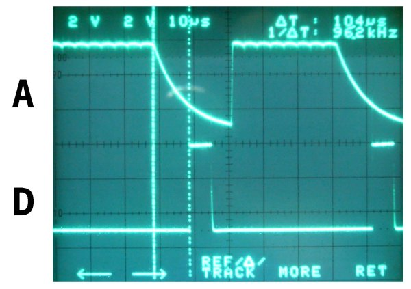

Voor het aansturen van een klassieke karakter LCD-module hebben we ―naast de voedingslijnen― 11 stuurlijnen nodig: 8 data-lijnen, R/W, RS en E. Als zo'n LCD-module aangesloten wordt op de bus van een 8-bits microprocessor is dat geen probleem. De datalijnen van de module worden verbonden met de databus van de μP, R/W aan R/W en RS wordt verbonden met A0. Er is dan enkel een adresdecoder nodig om E aan te sturen.
Willen we echter zo'n module aansturen met een microcontroller, dan kost die klassieke aanpak meestal meer pinnen dan we willen missen. Zo'n module kent gelukkig ook een 4-bits mode, en als de μP de nodige wachttijden in acht neemt, kan R/W permanent met GND verbonden worden. Het aantal benodigde pinnen is dan gedaald van 11 tot 6; een flinke besparing.
Het kan nog zuiniger. Zuiniger wat het aantal stuurlijnen
betreft, want er moet wel een prijs voor betaald worden in de
vorm van een IC.
Het schema hiernaast toont een eenvoudige interface.
Er wordt gebruik gemaakt van een 74HC595, een 8-bits
schuifregister. Bij deze aanpak zijn er maar 3
stuurlijnen nodig om het schuifregister te sturen.
In rust zijn zowel Latch als S-clk laag.
Willen we een karakter of een commando naar de LCD-module versturen, dan worden de
bits ―D7 eerst― één voor één op de Data
ingang geplaatst, waarna telkens S-clk kortstondig hoog
en terug laag gemaakt wordt.
Zodra D0 ingeklokt is, moet er beslist worden welke toestand de
Data-lijn moet aannemen: hoog als we een karakter
versturen; laag als het om een commando gaat. De
Data-lijn is immers verbonden met de RS-pin
van de LCD-module.
De laatste stap is het hoog en weer laag maken van de
E-lijn.
Tussen het versturen van 2 karakters moet er minstens 40μS gewacht worden. Bij het versturen van sommige commando's (clear display bijvoorbeeld) bedraagt de wachttijd 1.2mS.
Hier staat een brokje c-source, geschikt voor een AVR .
Wat gedaan, als de μC maar 2 pinnen beschikbaar heeft om een
LCD-module aan te sturen? Wel, met twee draden lukt het ook, maar
de interface wordt er niet eenvoudiger op, zoals hiernaast te
zien is.
De E-lijn, die bij het versturen van een karakter of
commando enkel hoog wordt nadat de 8 data-bits verzonden zijn,
kunnen we door de interface zelf laten sturen.
Dat gaat zo: in
rust is CLK laag. Daardoor wordt T1 in geleiding gestuurd, die
op zijn beurt C4 zal opladen. N1 inverteert die toestand, en
maakt de Latch-pin (RCK) van het schuifregister laag. Tijdens
het inklokken van de data zal T1 bij elk bit even sperren, maar
die periode is zó kort, dat R7 niet de kans krijgt om C4 te
ontladen.
Nadat de 8 data-bits ingeklokt zijn, houden we
―zoals bij de 3-draads interface― de data-lijn hoog bij het
versturen van een karakter en laag als het een commando
betreft.
Het belangrijkste verschil is echter, dat we de
CLK-lijn hoog houden. Nu krijgt R7 wél de kans, C4 te
ontladen. Het gevolg is, dat de uitgang van N1 hoog wordt,
hetgeen de Latch-pin van IC1 activeert.
Daarnaast wordt C3 opgeladen via R5, zodat na korte tijd ook N2
gaat omklappen, en zijn uitgang laag maakt.
Van daar gaat het naar N3 en N4, die samen een monoflop
vormen. Die monoflop zal uiteindelijk een korte positieve puls
op de E-pin van de LCD-module zetten, waarmee de cyclus
afgerond is.
Een plaatje maakt wellicht meer duidelijk dan woorden kunnen.
Naast een extra-IC betalen we nog een andere prijs voor het overbodig zijn van de derde stuurdraad: vermits de timing nu een belangrijke rol speelt, zijn we verplicht interrupts uit te schakelen als we met de LCD-module communiceren. Immers, als er een interrupt optreedt nadat we CLK hoog gemaakt hebben, kan het gebeuren dat R7 de tijd krijgt C4 te ontladen. Het gevolg is dan, dat de meest willekeurige data wordt aangeboden aan de LCD-module.
Hieronder zien we het tijdsverloop op de punten A, B en D, nadat CLK hoog gehouden wordt, en C4 de kans kreeg zich te ontladen. B activeert RCK door die een opgaande flank te geven, terwijl E geactiveerd wordt door de neergaande flank van D.

Heb je maar één pin vrij om een LCD-module te sturen? Geen nood, met de schakeling hiernaast lukt dat prima.
N1 en N2 vormen een monoflop, die getriggerd wordt door een
hoog-naar-laag flank op de DATA-lijn, en die zowel de seriële
klok als de Latch van IC1 activeert als de monoflop-tijd
verlopen is. Willen we een '1' inklokken, dan maken we DATA
kortstondig laag. Bij een '0' moeten we DATA laag houden tot de
monoflop-tijd verstreken is.
Bij het gelijktijdig aansturen
van RCK en SRCK loopt de toestand op de uitgangen steeds 1 bit
achter t.o.v. de data in het schuifregister. We moeten dus,
nadat het 8e bit in het schuifregister “geschoven” is, nog een
extra klokpuls geven en vervolgens DATA laag maken als het om
een commando gaat.
Ook N3 en N4 vormen enigzins een monoflop, die ditmaal de E-pin
van de LCD-module voor zijn rekening neemt. Dat gaat zo:
Tijdens het inklokken van de bits wordt T1 telkens even in
geleiding gestuurd. Die zal C3 ontladen, zodat de uitgang van N3
hoog wordt. Zodra alle bits ingeklokt zijn, blijft de uitgang
van N1 laag, gaat T1 sperren, en krijgt C3 de kans zich op te
laden via R3.
Eens dat gebeurt is, klapt N3 om, en geeft hij een kortstondige
negatieve puls aan N4. De uitgang van die laatste maakt
E even hoog, en daarmee is de taak volbracht.
Het spreekt voor zich, dat ook bij deze interface de timing een belangrijke factor is. Het volledig tijdsverloop kan gevolgd worden op onderstaand plaatje:
De code, die het aansturen op zich neemt, is eenvoudiger dan verwacht:
#define COM 0
#define LCD_PORT PORTB
#define LCD_DDR DDRB
#define LCD_PIN PB0
#define TXT 1
volatile unsigned char z;
#define smalldelay(x) z = x;\
while (z > 0)\
z--
// Voor een 14745600Hz-kristal
void char2LCD1(unsigned char karakter, unsigned char RS)
{
volatile unsigned char cnt, sreg;
sreg = SREG; // Status van het interrupt-register bewaren
cli(); // We willen niet onderbroken worden
for (cnt = 0; cnt < 8; cnt++) {
if ((karakter & 0x80) == 0x80) { // een '1'
cbi(LCD_PORT, LCD_PIN); // LCD_PIN kortstondig laag
smalldelay(2);
sbi(LCD_PORT, LCD_PIN); // en dan weer hoog
smalldelay(10);
} else { // een '0'
cbi(LCD_PORT, LCD_PIN); // LCD_PIN laag houden tot de uitgang van N2 terug hoog is
smalldelay(10);
sbi(LCD_PORT, LCD_PIN); // en dan weer hoog
smalldelay(2);
}
karakter = karakter << 1; // Bits een plaatsje naar rechts schuiven
}
if (RS == TXT) { // Tekst, RS moet hoog
cbi(LCD_PORT, LCD_PIN); // LCD_PIN kortstondig laag ...
smalldelay(2);
sbi(LCD_PORT, LCD_PIN); // ... en dan weer hoog, voor de E-puls geactiveerd wordt
smalldelay(64); // Wachten tot de E-puls is gegenereerd
} else { // Instruktie, RS moet laag
cbi(LCD_PORT, LCD_PIN); // LCD_PIN laag
smalldelay(66); // Wachten tot de E-puls is gegenereerd
sbi(LCD_PORT, LCD_PIN); // en pas dan weer hoog
}
smalldelay(10);
SREG = sreg; // Status van het interrupt-register herstellen
}
Het grote nadeel van de bovenstaande versie is de timing. Die geeft weinig ruimte voor speling.
Als we het schuifregister en het timing-gedeelte vervangen door
een μC als de ATtiny2313, zijn we (bijna) verlost van
alle timing-problemen.
Er moet wel een bitje bij: een startbit. Dat is altijd '1', en
het geeft de μC de mogelijkheid om na te rekenen wat hij kan
verwachten. Hij meet de lengte van het startbit, deelt dat door
twee, en gebruikt die maat om het verschil tussen een lange en
een korte puls te bepalen.
Na het startbit volgen 8 databits, waarbij een korte puls een
'0' representeert en een lange puls voor een '1' staat.
Als de zendende partij er zorg voor draagt om een lange puls
vier maal zo lang te maken als een korte puls, kan er weinig
misgaan - behalve dan wanneer een interrupt er voor zorgt dat
een korte puls merkelijk langer duurt dan voorzien.
In zo'n situatie kan je twee kanten op:
Of je schakelt interrupts uit als je data naar de Eéndraads
LCD-interface stuurt. Of je maakt alle pulsen langer, zodat de
interrupt-vertraging geen nefaste invloed meer heeft.
Het gebruik van een μC als interface heeft een bijkomend voordeel: hij kan het initialiseren van de LCD-module geheel zelfstandig uitvoeren.
Naast de standaard-functie ―als LCD-interface― kan de ATtiny2313 ook als teller of als frequentiemeter fungeren. Dat kan in sommige situaties handig van pas komen, al is de frequentiemeting beperkt wat nauwkeurigheid en bereik betreft.
Meer dan het onderstaande is er niet nodig om een karakter naar de
LCD-interface te sturen.
Hier is PB0 als uitgangspin gebruikt.
// De lengte van een korte puls in µS
#define PW 100
void char2lcd(unsigned char d)
{
unsigned char cnt;
PORTB |= _BV(PB0); // De startpuls
delay_us(PW * 4); // is altijd lang
PORTB &= ~(_BV(PB0));
for (cnt = 0; cnt < 8; cnt++) {
delay_us(PW * 4);
PORTB |= _BV(PB0);
if ((d & 0x80) == 0) { // Bit = 0?
delay_us(PW); // Dan korte puls
} else { // Anders
delay_us(PW * 4); // Lange puls
}
PORTB &= ~(_BV(PB0));
d *= 2; // Bits naar links opschuiven
}
delay_us(PW * 6);
}
Merk op, dat bit 7 als eerste wordt verstuurd.
(Vergroot)